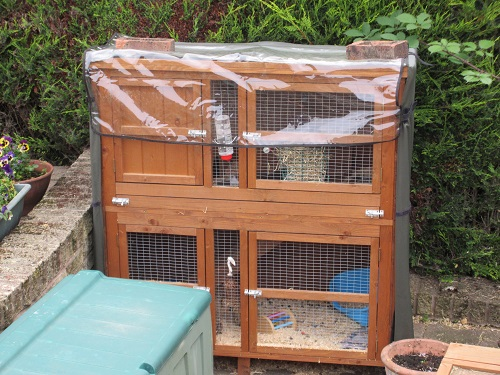

Your hutch should be at least 1.2m (4ft) and high enough for your rabbit to stand in bearing in mind they will grow a lot bigger than they are currently. The roof should be waterproof with long legs to keep the hutch clear off the ground and should have wire doors. You should put your hutch in a sheltered spot away from wind, rain and strong sunlight. The hutch should have 2 floors one for sleeping and one for activity. It is best to have an attachable run to the hutch because then they can go in and out whenever they feel like it and it is important for them to get lots of exercise and should be in their run at least once a day. Make sure on your run, you have a lock for your run so they don't escape. It is also easier than picking them up and moving them as rabbits don't like being picked up all the time and it is best to pick them up as little as you can. Try and place your hutch so it is in a sheltered spot and best on the grass. You will also need a waterproof hutch cover to fit over the hutch in case of bad weather, as rabbits hate the rain. Also with your hutch cover you will need insulation so your rabbit isn't too hot during summer and possibly a fly shield for during the summer because fly's can irritate your rabbit. You should clean out your rabbit at least once a week for hygiene, you can buy pet-friendly anti-bacterial sprays. to us when cleaning your rabbit out which you can put wherever your pet tends to wee.
You can also keep your rabbit as an indoor rabbit, but if you do this you need to make sure that you get them a big hutch so that they have enough room and don't feel trapped. They won't get as much fresh air inside and may become restless. However, when your rabbit is indoors it gets more social and quality time with you so especially if you get one rabbit, it can become lonely. Also in indoor cages, they are easier to clean out, so if you don't have much spare time an indoor cage can be useful. If you do buy an indoor cage you should make sure you buy lots of toys for your rabbit to play with as it is a small space and your rabbit might get bored.